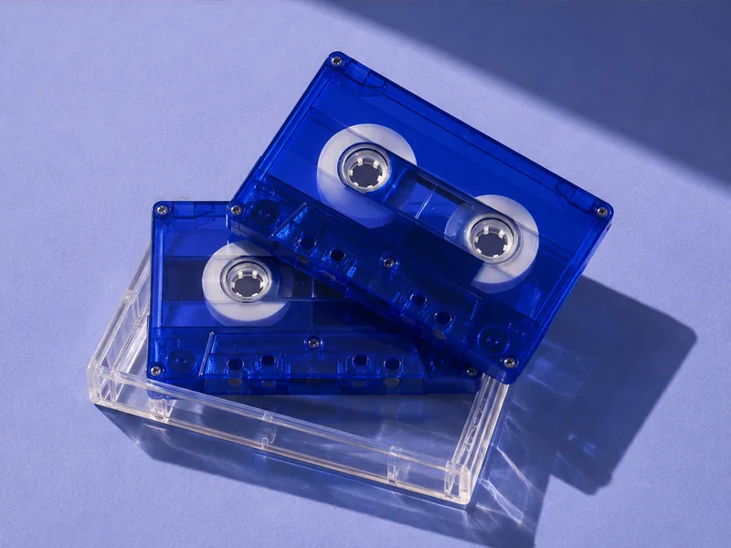

UtaLoop
正在检查登录…
设置
设置
×
AI 助学
模型服务商与歌词校对
播放音质
下次打开歌曲时生效。
歌曲缓存
容量上限
MB
应用
清理歌曲缓存
设为 0 MB 时只在线播放。
网易云音乐
登录保留时间
仅本次
30 天
长期记住
凭证仅用于本机连接网易云。授权失效后需重新扫码。
批量歌词标注
×
取消全选
词典批量标注
补齐缺失的分词和注音
导出校对包
保存歌词和现有标注，供人工校对
导入校对结果
将文件里的校对应用到本机曲目
大模型校对
将所选歌词和注音发送至已配置的接口
配置 AI 助学
设置接口地址、API Key 和模型
用网易云音乐扫码
关闭
选歌练唱
‹ 选歌练唱
搜索
我的网易云
喜欢的音乐
↗

我的歌单
↗
学习清单
在学
—
已学
—
最近练唱
—
‹ 选歌练唱
批量标注
歌曲
歌手
歌单原序
排序方式
歌单原序
倒序排列
歌名顺序
歌手顺序
时长从短到长
时长从长到短
歌曲
加载更多
扫码登录
继续练唱
打开练唱页
在学
已学
标为未学